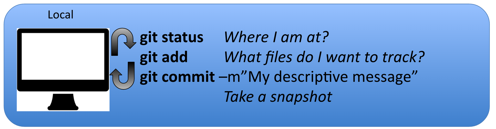

So code versioning is very useful to keep track of changes you made to your scripts. It allows you to choose when you have reached a stage in your code that you think is worth keeping track of, like a new function that makes your data analysis soooooo much better.
For scientists, version control is a useful tool to help you to track changes you make to your scripts and enable you to share your codes with your collaborators. For example, if you break your code, git can help you to revert to an earlier working version. Want one of your collaborators to add a feature to your code to do a specific analysis? Code versioning can help you to do so in a smooth and organized manner, tracking who changed what.
This training material focuses on the code verioning system calld Git. Note that there are others, such as Mercurial or svn for example.


Git is a free and open source distributed version control system. It has many functionalities and was originally geared towards software development and production environment. In fact, Git was initially designed and developed in 2005 by Linux kernel developers (including Linus Torvalds) to track the development of the Linux kernel. Here is a fun video of Linus Torvalds touting Git to Google.
Git can be enabled on a specific folder/directory on your filesystem to version files within that directory (including sub-directories). In git (and other version control systems) terms, this “tracked folder” is called a repository (which formally is a specific data structure storing versioning information).

You modify files in your working directory and save them as usual
You add snapshots of your changes files to your staging area
You do a commit, which takes the files as they are in the staging area and permanently stores them as snapshots to your Git directory.
And repeat!!
Everytime you create a new snapshot, you add the new version of the file to the database, while keeping all the previous versions in the database. It creates an history that is like a graph that you can navigate:

Before you start using git on any computer, you will have to set your identity on your system, as every snapshot of files is associated with the user who implemented the modifications to the files.
You need to do this step the first time you use git on a computer.
Setup your profile:
Your name and email:
git config --global user.name “yourName”
git config --global user.email “yourEmail”Optional:
Check that everything is correct:
git config --global --listModify everything at the same time:
git config --global --editSet your text editor:
git config --system core.editor vim Want to know more about the available configuration options? How to change the default text editor used byt git? How make git remember your GitHub credentials?
Want to know more about the available configuration options? How to change the default text editor used byt git? How make git remember your GitHub credentials?
As we mentioned earlier, a git repository is a folder/directory on your machine in which content is monitored for any changes by git.
git init is the command to start the tracking in a specific directory and transform it into a git repository:
mkdir oss
cd oss
mkdir dessert
cd dessert
pwd
git initgit clone is the git command to copy an existing repository to your machine, more precisely adding the repository to the directory you are in.
cd
mkdir oss
cd oss
git clone https://github.com/your_username/your_reponame.gitThe cloning process will automatically create a directory on your machine named like the online repository.
Let us have a closer look at the git workflow. It is important to stress that almost all of the git workflow happens on your local machine:

Navigate in the dessert repository you just created.
1.) Let us create a csv file containing our name and favorite dessert:
vim favorite_desserts.csv2.) Edit the new file adding headers and your info:
Note: hit the key i to switch to insert mode in vim. My file would look like this
Name, Dessert
Julien, Ice creamExit the insert mode esc
Exit vim and save :wq
3.) Add the new file to git:
git status
git add favorite_dessert.csv
git status
git commit -m "Julien's favorite dessert"
git status4.) Add a friend to the csv:
vim favorite_dessert.csv
My name, My desert
Julien, Ice cream
Eliott, CrepesSave and exit vim
5.) Add (stage) and commit the new version of the file
git status
git add favorite_dessert.csv
git status
git commit -m "Adding Eliott's favorite dessert"
git status6.) Check the differences between the two last commits:
git diff HEAD~1Note: hit q to exit
7.) We can also look at the log of commits to look a the commit sequence
git log
git log -1 Challenge
ChallengeWrite a R code to read the favorite_desserts.csv files in and add a new row to the dataframe and overwrite the csv with the new entry. Of course you need to track the development of your code using git!!
git status this command is your friend! It will tell you where you are at and what are your options. You can use at any point in your process.git log displays history of committed snapshots. It lets you list the project history, filter it, and search for specific changes.git diff --cached
To be used before committing, to preview the changes to be committed. git diff HEAD~1 my_script.R to inspect the changes between the last commit (HEAD) and the previous onegit diff HEAD~2 my_script.py to inspect the changes between the last commit (HEAD) and 2 commits before.Git has a lot of terms and commands, see reference at the end of this document for an extensive terminology.
.gitignore is a specific file used to list what (type of) files you do not want git to track. This file need to be placed at the top level of the directory.
File content example from GitHub: https://gist.github.com/octocat/9257657
To create this file from the terminal/shell:
vim .gitignoreTo know more: https://git-scm.com/docs/gitignore
git reset HEAD lets you remove a file from the staging area
git reset HEAD <my_file_I_added_by_mistake.xls>This will remove the file from your next commit. Can be used to undo an erronous git add.
git commit --amend let you amend your last commit with the most recent changes, like for example if you forgot a file
git add <missing_script.R>
git commit --amend -m "My new message"More info about how to undo things here
Warning! git checkout overwrite the file version by the latest commited one => your changes will be lost!
git checkout -- test_file.txtYou can also revert a file to a former commit in the history using the unique commit hash
git checkout e11e34 test_file.txtgit init is called master.{kind=link}